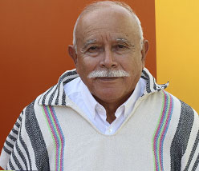
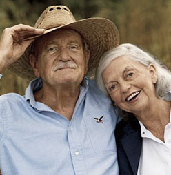
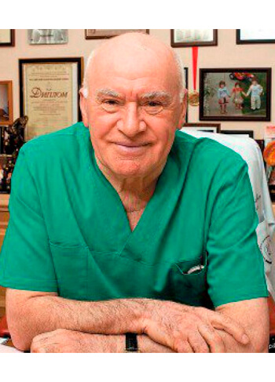
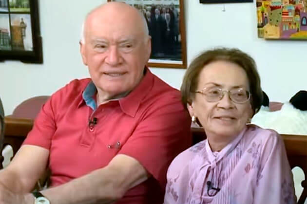
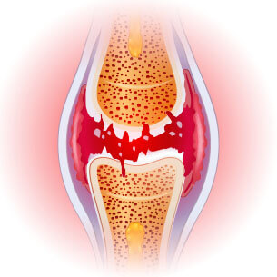
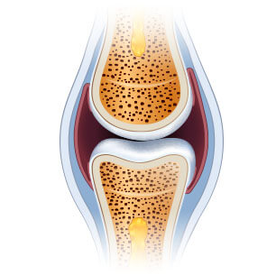
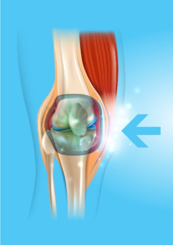

Mal conseguia andar por causa das dores no joelho e nas costas. Os comprimidos, injeções e operações não tiveram qualquer efeito sobre mim. Pelo contrário: tiraram-me o dinheiro e a energia. Eu não sabia o que fazer. Felizmente, tomei conhecimento deste creme. Uma vez que esta descoberta foi feita por um cientista famoso, eu não tinha dúvidas de que seria ajudado. E aqui está o resultado! Senti-me melhor desde a primeira utilização. Após um mês, sinto-me jovem e cheia de energia.
Dou longos passeios e tomo conta do jardim que plantei com a minha neta. A dor é esquecida. Obrigada!
★★★★★
Martina Vieira, 73 anos
Fácil e eficaz
É difícil acreditar que um método tão simples possa fazer tais milagres. Basta usar o creme e, pouco tempo depois, recupera-se a mobilidade. Inacreditável. Eu, as minhas irmãs e os meus primos já o experimentámos. Recomendaria a qualquer pessoa! Realmente um fim à dor articular.
★★★★★
Isabel Pereira, 67 anos

Sinto que a minha família necessita-me
Anos de trabalho na fábrica destruíram as minhas articulações. Prometi várias vezes aos meus netos que jogaria futebol com eles ou que iríamos juntos de bicicleta, mas depois cancelei-o por causa da dor. As crianças não compreendem isto e ficam zangadas. Senti-me inútil. Até que a minha filha me deu este creme
Fortuflex. Foi fantástico! Senti imediatamente a diferença. Já passou 1 mês desde que a usei e sinto-me invencível! Posso correr e circular sem
qualquer problema. Estou novamente a passar tempo com a minha família no ar fresco, tal como antes.
★★★★★
César Mendes, 67 anos
Reconstruí a minha vida
Estar com excesso de peso e trabalhar nos pés arruinou-me os joelhos: sou cabeleireira. Não conseguia suportar a dor, por isso tomava mais de 10 comprimidos por dia, mas eles deixavam-me sonolento e faziam-me ganhar peso. Por sorte, um colega recomendou-me este maravilhoso creme. Acabou por ser a solução perfeita. A dor desapareceu como magia e a minha paixão pelo cabeleireiro voltou. Recuperei a minha saúde, o que me permitiu começar a fazer exercício e... Perdi 10kg! Uma mudança incrível.
★★★★★
Ana Lopes Guimarães, 43 anos

A minha mulher não se queixa mais
Em casa, a minha mulher encontrará sempre algo para eu fazer - arranjar uma torneira, montar um armário, ou pintar. Mas tenho dificuldade em fazer este tipo de trabalho; doem-me tanto as costas que não me consigo dobrar nem sentar! Os meus cotovelos e joelhos também são problemáticos. Felizmente, o creme Fortuflex tornou a minha coluna vertebral saudável e permitiu-me fortalecer as minhas articulações.Senti-me como se tivesse perdido o peso que tinha acumulado ao longo dos anos. A minha mulher deixou de se queixar que eu não a quero ajudar em casa!
★★★★★
Sérgio Vinhedo, 67 anos
Voltei ao trabalho
Consegue imaginar o que é perder mobilidade num só braço? Foi o que me aconteceu: os meus dedos doíam-me, as minhas mãos estavam inchadas e a tremer. Eu sou joalheiro, o que faço é o meu trabalho e a minha paixão. Cada vez mais vezes tive de fechar a minha pequena oficina e, por esta razão, a minha família teve de se limitar muito. Comecei a procurar formas de restaurar as juntas e em todo o lado disseram que o melhor produto era Fortuflex. Tentei, embora tivesse pouca fé, mas passados 30 dias as minhas mãos estavam mais saudáveis do que há 10 anos atrás. Consegui voltar ao trabalho!
★★★★★
Rafael Gonçalves, 55 anos
Nova vida a um preço tão baixo
Normalmente, se algo é eficaz, tem de ser caro. Foi o caso da minha massagista pessoal, a quem paguei quase um terço do meu salário e esperava que ela fizesse um "milagre". Mas não vale esse tipo de dinheiro, e as minhas articulações e coluna vertebral estão a doer ainda mais. Quando o meu cunhado me aconselhou a experimentar Fortuflex, pensei que era uma treta. Como poderia o creme ajudar-me quando o terapeuta de massagens supostamente excelente não me pôde ajudar? Deveria ter visto a minha cara quando a dor desapareceu. Um milagre!
★★★★★
Rita Godinho, 67 anos
O único método eficaz
Tentei diferentes métodos para me livrar da crise e da dor na minha anca. Nada funcionou. Além disso, a degeneração tinha-se espalhado pela minha coluna vertebral. Com Fortuflex aconteceu o oposto. Já não tenho preocupações com a minha saúde porque sou 100% saudável!
★★★★★
Elena Oliveira, 68 anos
Um curso de tratamento, e pode esquecer a dor das suas articulações e da coluna! Os especialistas recomendam-no!
Bom dia,
Eu sou Roberto Barro, cientista e especialista em biologia molecular. Nesta página, gostaria de vos apresentar o maior feito da minha vida, para o qual fui nomeado para um prémio de prestígio. Desenvolvi um método pelo qual qualquer pessoa pode eliminar a dor, assim como restaurar as articulações e a coluna vertebral, e ainda recuperar a mobilidade num único curso de aplicação.

Sem químicos pode:
aliviar a dor nas articulações e na coluna vertebral – sentir alívio;
Restaurar e fortalecer as articulações, tendões, músculos e
espinha por 87% para que funcionem como novos;
Recuperar a saúde física e não temer ficar incapacitado;
eliminar a dormência nas articulações e na coluna vertebral
e restaurar o conforto e a suavidade do movimento;
proteger as articulações e a coluna vertebral do desgaste e manter a saúde física durante os próximos anos;
eliminar a degeneração, inflamação e inchaço – reduzir a dor e restaurar o conforto do movimento;
recuperar de fraturas, entorses e lesões; e, graças a isto, obter 3 vezes mais energia e desfrutar novamente da vida!
Deve saber que tudo isto pode ser conseguido sem cirurgias perigosas, medicamentos caros, filas intermináveis de especialistas (que também desistem impotentes...) e sem consumir produtos insalubres (nocivos para o fígado, estômago e rins), e, em última análise, poupando muito dinheiro. Se quiserem fazer isto, devem ler o que tenho para vos dizer.
Não importa a sua idade ou há quanto tempo sofre de dores nas articulações ou na coluna vertebral. Não importa se as suas articulações estão a ranger há 2 dias ou 20 anos. Mesmo que o seu médico lhe tenha dito que as suas articulações e coluna vertebral estão completamente destruídas e que perdeu toda a esperança de uma vida normal... Saiba que existe um remédio que pode ajudá-lo a recuperar a mobilidade em apenas um curso de terapia. Sem dor!
Veja porque é que o meu método é uma alternativa a outros métodos de combate à dor articular:
ajuda a aliviar a dor quase imediatamente após a aplicação e pode esquecer os problemas articulares após apenas um curso de tratamento;
seguro para o corpo: a fórmula macromolecular é um complexo baseado em ingredientes naturais que funcionam em perfeita harmonia com o corpo humano. Por conseguinte, não envenena o corpo nem causa dependência* (*Intolerância individual aos ingredientes é possível);
ajuda a reparar mesmo as articulações e coluna vertebral mais danificadas, para que funcionem como novas, sem dor;
pode ser usado em casa em vez de esperar em salas de espera e pedir ajuda;
poupa muito dinheiro em vez de o gastar em métodos ou produtos químicos caros e por vezes ineficazes.
Criei um método natural que irá restaurar as suas articulações e coluna vertebral desgastadas.
Graças a ela, pode esquecer a dor e o medo da deficiência. Todos os problemas resultantes de fraqueza articular ou espinal serão coisa do passado. Será capaz de eliminar não só a dor, mas também a fraca mobilidade, o ranger e o inchaço. Finalmente poderá fazer todas as coisas que não pôde fazer até agora por causa da dor.
Pode subir escadas, abaixar-se, carregar os seus netos nos braços sem qualquer problema. Pode desfrutar de jardinagem, caminhar, andar de bicicleta, dançar! E tudo isto porque consegui desenvolver uma fórmula
para melhorar as vossas articulações e restaurar a sua mobilidade. Como é que o fiz?
Eu queria salvar a minha mãe.
De acordo com as últimas investigações, em Portugal, uma em cada três pessoas entre os 36 e 95 anos tem um problema com as suas articulações ou costas. Estas pessoas normalmente nem se apercebem, pensando que é normal o seu corpo doer, ficar dormente ou clicar por vezes. No entanto, a maioria está em risco de grave degeneração e deterioração das cartilagens, o que pode significar que um dia simplesmente não conseguirá sair da cama...
Infelizmente, este problema também afetou a minha mãe. No início só tinha dificuldade em subir escadas ou em sair de uma cadeira. Mas depois a situação piorou... As ervas daninhas começaram a crescer no jardim, que ela cuidou tão fervorosamente, porque já não conseguia cuidar delas. Ela deixou de nos convidar para jantares familiares. Ela tornou-se cada vez mais irritável e triste. Mais tarde, devido a dores nos joelhos, ancas, coluna vertebral e cotovelos, ela nem sequer se conseguia lavar.
Era uma ameaça à vida!
O pior de tudo é que a sua mobilidade se tornou uma ameaça à vida. Nunca esquecerei o dia em que vim buscar a minha mãe para a levar a um especialista. A minha mãe teve de atravessar a rua e... ela quase foi atropelada por um carro! Andava muito lentamente por causa da dor, e de repente o seu joelho doía tanto que não podia dar mais um passo. O condutor parou no último momento...
Fiquei furioso quando vi o saco cheio de vários remédios conjuntos na posse da minha mãe. Aconteceu que ela tinha tomado muitos medicamentos durante todo o tempo. Isto deixou claro porque tinha úlceras estomacais, problemas de fígado e outros problemas de saúde... A minha mãe queria fazer algo a esse respeito. Mas todos os remédios, em vez de ajudarem, estavam literalmente a envenenar o seu corpo.
Como é que inventei a fórmula?
Tive de ajudar a minha mãe a recuperar a sua saúde articular, e com ela a sua saúde geral e vitalidade. Eu queria que ela fosse uma avó maravilhosa para os meus filhos, tal como ela foi uma mãe maravilhosa para mim. E eu pensei: "Caramba, és um cientista! Tem estado envolvido na descoberta de muitas substâncias diferentes para combater a doença. Porque não inventa um produto de reforço das articulações"? Por isso, comecei a pesquisar...
Fiz testes laboratoriais intensivos durante um ano. Experimentei diferentes combinações de ingredientes ativos na minha mãe. Sublinho que todos eles eram naturais e seguros para o corpo. Inspirei-me no poder dos ingredientes naturais combinados com os últimos avanços em biologia molecular. O conhecimento científico, a fé na natureza e um pouco de sorte valeram rapidamente a pena: cheguei a uma fórmula macro molecular única.
Comecei imediatamente a papelada para ensaios em grande escala. A sua eficácia de 98%
foi confirmada pelos principais centros de investigação da Europa e dos EUA! Mesmo na fase de teste, a minha fórmula macromolecular restaurou naturalmente a função articular e espinal em milhares de voluntários.
Resultados incríveis
A dor da minha mãe diminuiu assim que ela começou a usar a minha invenção. Ficou satisfeita por a dor palpitante nos joelhos já não a ter incomodado. Mas isto foi apenas o começo. Após uma semana, as articulações e a coluna já não estavam estaladiças e dormentes. Depois o inchaço nos joelhos e cotovelos desapareceu e toda a inflamação nas articulações e coluna vertebral desapareceu. A minha mãe voltou a ocupar o seu querido jardim. Ficámos todos surpreendidos quando ela subitamente subiu de bicicleta e montou, cheia de felicidade!
- Porque anda tão devagar? - Ela perguntou com impaciência quando saímos todos para comer em família. E habituámo-nos a andar devagar na sua presença. Não quatro semanas mais tarde, a minha mãe confessou alegremente: "Filho, as minhas articulações estão saudáveis. Sinto-me tão móvel como quando era jovem! Inventaste um antídoto para as dores articulares! Quantas pessoas vai ajudar! Estou-lhe muito grata!” E, claro, a minha mãe dançou de felicidade com os seus bisnetos no seu 85º aniversário. Os olhos dos hóspedes arredondados quando a viram!

A minha mãe recuperou a plena mobilidade e com ela a sua energia e alegria de viver.
A deterioração das suas articulações e coluna vertebral ao longo dos anos tinha sido inevitável. Hoje, com a minha fórmula macromolecular, a deterioração das articulações e vértebras do esqueleto humano pode não só ser travada como invertida.
Deixem-me explicar como funciona a minha forte fórmula conjunta. O processo é bastante complexo, mas vou tentar explicá-lo de uma forma que um não cientista possa compreender.
Ajuda para a dor articular e reabilitação 24 horas por dia
As articulações e a coluna vertebral desgastam-se ao longo dos anos, mas também se deterioram devido a excesso de peso, trabalho físico extenuante, transporte de cargas pesadas, exercício excessivo, lesões e hematomas. O fluido sinovial e a cartilagem deterioram-se. As juntas são como uma dobradiça não lubrificada: começam constantemente a esfregar e a degenerar. Com o tempo, começa-se a sentir rigidez e dores terríveis que interferem com o movimento normal. Desenvolve-se uma inflamação severa e destruição.
Infelizmente, a cartilagem e as células do líquido sinovial não têm a capacidade de se regenerar a si próprias. Isto significa que, ao contrário de outras células do corpo humano, elas não podem voltar à vida por si próprias. É por isso que as suas articulações e coluna vertebral se desgastam dia após dia. Faz sentido que não se possa parar de caminhar ou de fazer atividades diárias para proteger as articulações e a coluna vertebral. Isso seria um absurdo.
Assim, o meu objetivo era criar uma fórmula de acção radical que ajudasse a eliminar a dor, reparar articulações e coluna gastas e proteger contra danos futuros. E eu descobri-o! Desenvolvi uma fórmula macro molecular para uma recuperação intensiva. Chamei-lhe Fortuflex.
A fórmula penetra em lugares dolorosos e ajuda a desligar os impulsos de dor elétrica a nível celular, de modo a que não haja dor. Devido às suas propriedades, ajuda a estimular a nutrição celular, o que começa os processos regenerativos. Ao mesmo tempo, os ingredientes predominantemente naturais têm um efeito positivo no desencadeamento da regeneração automática da cartilagem e do líquido sinovial. A utilização regular desta fórmula é suficiente para garantir que a regeneração ocorra 24 horas por dia. Leva uma vida normal e as suas articulações e coluna vertebral são rejuvenescidas e a mobilidade é restaurada.
Porque é que a minha fórmula macromolecular se chama o "antídoto para a dor articular"?
TEM 98% de EFICÁCIA DE REGENERAÇÃO SOBRE CRUZ E FLEXIBILIDADE FINOVIAL* (*do Instituto de Investigação Interna de Reumatologia)

ANTES
As articulações são danificadas e propensas à degeneração e à dor

DEPOIS
Uma articulação saudável, regenerada e sem dor
Isto pode ter parecido um milagre até agora. No entanto, é um facto confirmado pelo caso da minha mãe e das 14.000 pessoas que já conseguiram recuperar articulações e espinhais fortes graças ao meu método. Além disso, a fórmula macromolecular tem sido reconhecida e admirada pelos melhores especialistas em reumatologia, ortopedia e neurologia. Por outro lado, continuo a receber cartas de pessoas que me agradecem pela minha ajuda; esta é a principal razão pela qual estou feliz e orgulhoso desta descoberta.
É SEGURA E EXTREMAMENTE FÁCIL DE USAR

Os ingredientes naturais funcionam maravilhas - tudo o que a ciência tem de fazer é criar a composição perfeita! Este é o lema por detrás da minha macro fórmula para a reparação de articulações. A terapia consiste em substâncias naturais e seguras
que utilizei no creme, para que todos possam fazer um curso a partir do conforto da sua própria casa. Basta aplicá-lo para eliminar a dor e depois, dia após dia, desfrutar de articulações e coluna vertebral fortes e levar uma vida plena novamente! *Os resultados são individuais.
Todos os seus amigos e familiares que estão habituados a vê-lo em sofrimento, mal capazes de andar, ficarão espantados. Quando o veem correr, andar de bicicleta e dançar sem dor. Eles não acreditarão que reconstruiu as suas articulações num curso de aplicação de creme!
AJUDA PARA O ALÍVIO RÁPIDO DA DOR
INGREDIENTES NATURAIS
FACILIDADE DE UTILIZAÇÃO
GRANDE POUPANÇA RESULTADO APÓS A PRIMEIRA APLICAÇÃO
AJUDA A REGENERAR AS
ARTICULAÇÕES E A COLUNA VERTEBRAL
Como poderia perder esta oportunidade de vencer a dor e restaurar a sua saúde?
Pode continuar a sofrer de dores terríveis nas articulações e na coluna vertebral. Também pode arruinar a sua saúde com produtos químicos nocivos e temer ficar acamado para o resto da sua vida... Mas porquê, quando lhe ofereço uma forma rápida, fácil e barata de restabelecer a sua saúde sem dor? Na maioria dos casos, um curso do tratamento é suficiente para se juntar aos 14.000 utilizadores Fortuflex satisfeitos, que já conquistaram a dor, repararam as suas articulações e coluna vertebral e estão agora a gozar de boa saúde!
Não está a arriscar nada!
Usando Fortuflex, pode ajudar o seu corpo a eliminar a dor e a recuperar a mobilidade física num só curso do creme. Além disso, não se arrisca nada!
3 benefícios da minha fórmula macromolecular
1. Originalidade: Fortuflex utiliza uma fórmula baseada nos agentes mais poderosos para a reabilitação das articulações e da coluna vertebral. A sua eficácia tem sido confirmada pelos nossos testes laboratoriais. É a única fórmula tão inovadora. Assim pode obter o produto original, disponível apenas através deste website.
2. Qualidade: Graças ao avançado processo de fabrico da fórmula macromolecular, esta cumpre os mais elevados padrões de qualidade. Tendo em consideração a sua saúde e bem-estar, a concentração de princípios ativos foi selecionada de modo a que a aplicação seja completamente segura. Tudo isto para garantir que os resultados estão de acordo com as suas expectativas.
3. Eficácia: Numerosos testes laboratoriais e de consumo confirmaram a eficácia do Fortuflex. Com base nestes resultados, a minha invenção foi reconhecida por especialistas de todo o mundo que a recomendam a todos os que a procuram. Estão convencidos de que um curso do creme irá eliminar as dores articulares e da coluna vertebral e restaurar a mobilidade.
Esqueça a dor, restaure as articulações e a saúde física de uma forma simples, segura e rentável
As principais empresas farmacêuticas nos EUA e Japão estão literalmente a lutar por uma patente sobre a minha fórmula macromolecular. Quando o vender, o creme estará disponível em todo o mundo, mas provavelmente a um preço exorbitante.
Antes disso acontecer, decidi disponibilizá-lo às pessoas do meu país, recorrendo à ajuda da Fundação de Caridade, que financiou parte da produção, e o produto está agora disponível
50% mais barato. Tudo para ajudar o maior número de pessoas no meu país a eliminar problemas de articulação e coluna vertebral.
É por isso que vos encorajo a aproveitarem esta oportunidade! É fácil de encomendar. Não é necessário enviar dinheiro para qualquer lugar para o obter. Só tem de preencher
o formulário em 2 minutos e em poucos dias receberá uma encomenda pela qual pagará confortavelmente ao estafeta.
Obrigado por ter tido tempo para ler a minha mensagem. Desejo-lhe uma nova vida saudável na qual
possa desfrutar de estar saudável e dançar, correr, andar de bicicleta e fazer todas as coisas que até agora eram impossíveis por causa da dor nas articulações!
Roberto Barro
Comprar Fortuflex a um preço com desconto. 39EUR mais barato
Pacotes disponíveis:
12
Encomende hoje e poupe
39EUR. A promoção termina quando o limite de 200 pedidos é atingido.